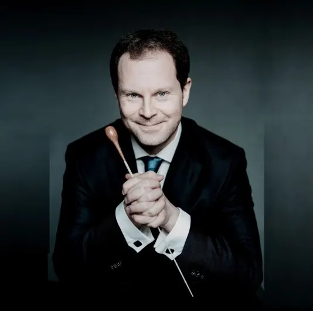

Nieuws ·
Alexei Ogrintchouck nieuwe chef-dirigent Phion

Dit bericht uit ons archief verscheen op 8 mei 2023 op NieuwsNijmegen.nl. Data, tijden en prijzen kunnen inmiddels anders zijn.
Op 8 mei maakt Phion, Orkest van Gelderland & Overijssel, bekend dat Alexei Ogrintchouk per seizoen 2023-2024 de nieuwe chef-dirigent is. De Nederlands-Russische dirigent en hoboïst Ogrintchouk is al sinds 2020 een graag geziene gastdirigent. Hij verbindt zich voor 3 seizoenen, waarin hij 4 producties per seizoen leidt. Ogrintchouk volgt Otto Tausk op, die tussen september 2020 en juni 2022 de eerste chef-dirigent van Phion was.
Phion is zeer verheugd met de benoeming van Alexei Ogrintchouk. “Het is met een intens gevoel van geluk en trots dat we Alexei verwelkomen als onze nieuwe chef,” zegt Joris Nassenstein, artistiek manager van Phion. “Alexei is een briljante musicus, internationaal gerespecteerd en al decennia verbonden met de Nederlandse muziekcultuur. Hij komt ons gepassioneerd een schat aan muzikaal inzicht en inspiratie brengen en misschien wel als belangrijkste: de verbluffende kracht van het plezier in samen muziek maken. We zijn geroerd door de gretigheid waarmee Alexei zich aan Phion wil verbinden. Alexei was de afgelopen jaren regelmatig bij ons te gast en de chemie tussen hem en ons orkest was voor iedereen voelbaar. Ik verheug me enorm op onze samenwerking. De musici en onze nieuwe chef gaan het beste in elkaar losmaken.” Ogrintchouk blijft naast zijn carrière als dirigent als solo-hoboïst verbonden aan het Koninklijk Concertgebouworkest.
Alexei Ogrintchouk: “Ik ben vereerd en enorm blij om deze nieuwe rol op me te nemen. Ik ben diep ontroerd en dankbaar voor het in mij gestelde vertrouwen en kijk erg uit naar deze muzikale reis met Phion. Deze groep musici blijft muzikaal zoeken naar het hoogst haalbare en ik ben enorm gemotiveerd om het beste uit onze samenwerking naar boven te halen. We hebben een aantal fantastische concertzalen in Gelderland en Overijssel en ik kijk ernaar uit om de verbinding aan te gaan en onze passie te delen met een groot en divers publiek.”
Tussen 12 en 21 mei dirigeert Ogrintchouk zes concerten met het Vioolconcert van Barber gespeeld door Isabelle van Keulen, en van Beethoven de Ouverture en Finale uit Die Geschöpfe des Prometheus en de Zevende symfonie. Komend seizoen neemt hij een belangrijke rol in binnen het Beethoven Festival van Phion en dirigeert hij de Vierde, Vijfde, Zesde en Achtste symfonie. Phion en de nieuwe chef zetten samen de Mahlertraditie met kerst door, te beginnen met de Vijfde symfonie. Verder staan op het programma Brahms’ Vierde en het Vioolconcert van Bruch met Liza Ferschtman.
Alexei Ogrintchouk
De Nederlands-Russische dirigent Alexei Ogrintchouk geeft al vanaf zijn dertiende concerten als hoboïst in Rusland, Europa en Japan. Hij studeerde af aan de befaamde Gnessin Staatsacademie voor Muziek in Moskou en het Parijse conservatorium en won een aantal internationale concoursen, waaronder op 19-jarige leeftijd de prestigieuze CIEM International Competition in Genève. Daarnaast was hij de winnaar van de Europese Juventus-prijs in 1999, tweemaal de “Victoires de la Musique Classique” in Frankrijk in 2002, de Triumph Prize in Rusland in 2005 en de Borletti Buitini Trust Award in 2007. Bovendien maakte hij deel uit van de prestigieuze Rising Stars en BBC New Generation Artists-programma’s.
Als dirigent stond Alexei Ogrintchouk onder andere voor het Mariinsky Orkest, St. Petersburg Symphony Orchestra, Orchèstre Philharmonique de Monte-Carlo, Brussels Philharmonic, Orchèstre National des Pays de la Loire, Lahti Symphony Orchestra, Phion, Orkest van Gelderland en Overijssel, Camerata RCO (Koninklijk Concertgebouw Orkest), Concertgebouw Kamerorkest, Amsterdam Sinfonietta, KREMERata Baltica, Orchestre de Chambre de Lausanne, Orchestre de Chambre de Genève en het Verbier Festival Orkest. De benoeming bij Phion is zijn eerste positie als chef-dirigent.
Sinds augustus 2005 is Alexei Ogrintchouk eerste solohoboïst van het Koninklijk Concertgebouworkest. Daarvoor bekleedde hij vanaf zijn twintigste dezelfde functie bij het Rotterdams Philharmonisch Orkest. Als charismatische en technisch briljante hoboïst heeft hij gesoleerd bij de beroemdste orkesten van de wereld onder de grootste dirigenten. Alexei Ogrintchouk werd in 2011 als opvolger van Maurice Bourgue benoemd tot hoofdvakdocent aan de Haute Ecole de Musique de Genève. Hij is sinds 2010 gastdocent aan het Koninklijk Conservatorium van Den Haag en geeft wereldwijd masterclasses.